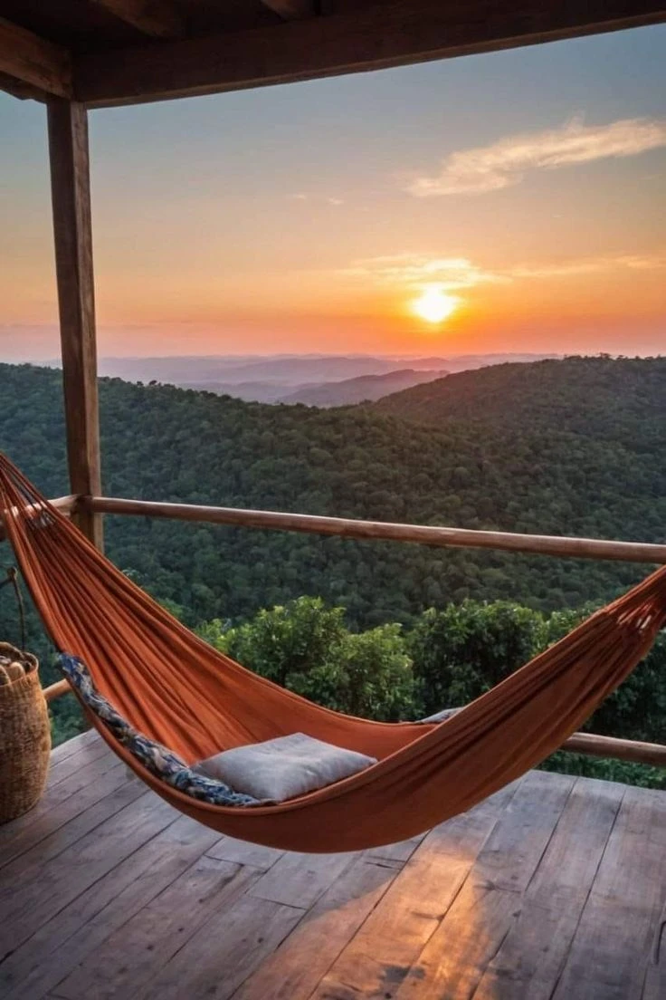
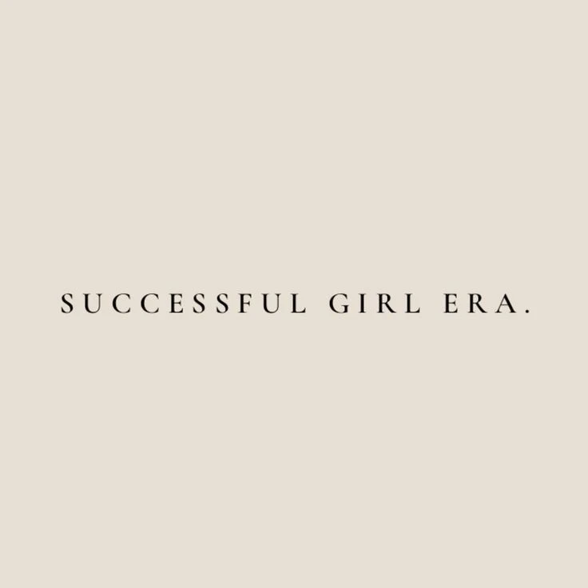
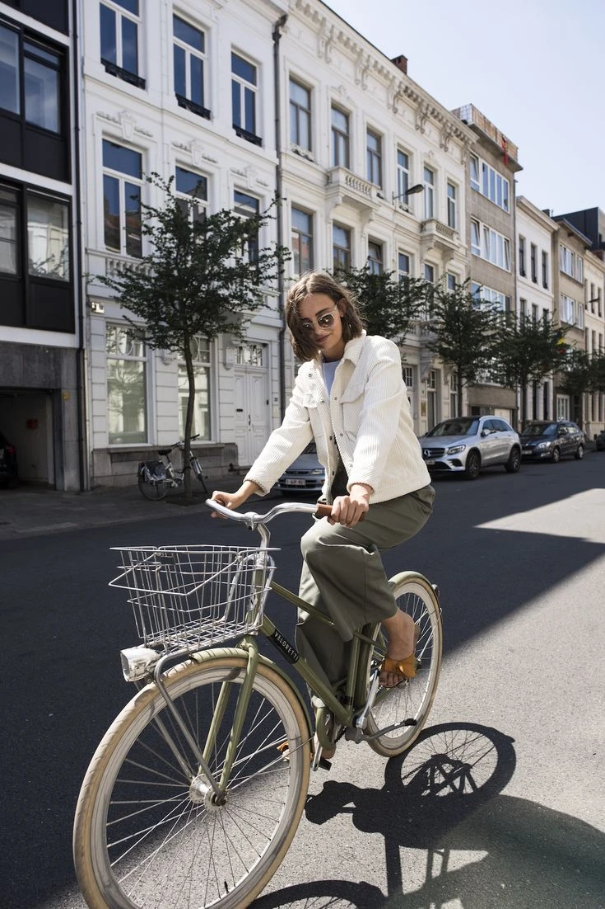

רגע לעצמי
התפתחות אישית
לעצור, להתבונן, ולתת מקום למה שחשוב לי.

ריטריט ביתי
רגע לעצמך.
ריטריט יום כיפור.
לעצור, להתבונן, לשחרר ולהתחיל מחדש.
לריטריט המלא


השראה לשנה שלי
ויז׳ן בורד
מקומות, תחושות ורגעים שאני רוצה לפנות להם מקום.
ללוחות ההשראה